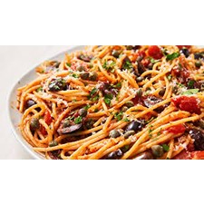

Ingrediënten:
- Pasta
- Tomatenpuree
- Olijven
Bereiding:
- Kook de pasta volgens de instructies op de verpakking.
- Verhit olijfolie in een pan en voeg knoflook toe, bak tot het geurig is.
- Voeg de tomatenpuree toe en roer goed.
- Voeg gehakte tomaten en olijven toe aan de saus, laat sudderen tot de saus dikker wordt.
- Breng op smaak met zout, peper en een snufje gedroogde chili vlokken (optioneel).
- Serveer de saus over de gekookte pasta.
